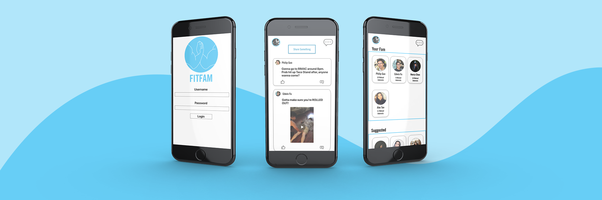
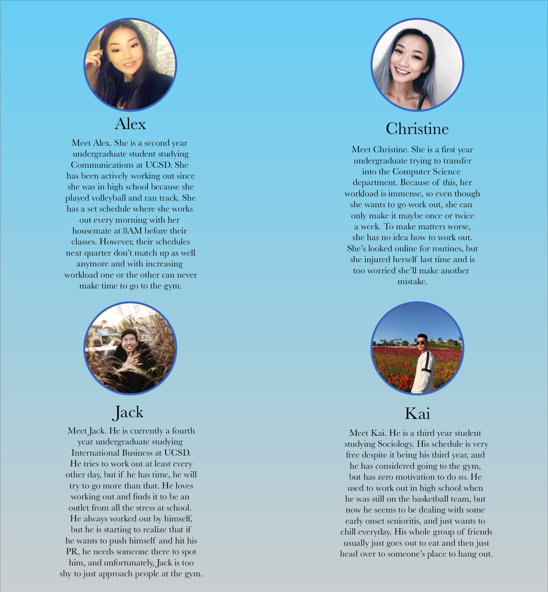

This fall I undertook a quarter long project for a design course at UCSD where I worked on an app with
fellow
classmates, Edwin Fu and Mayu Wilson. The objective was to create something that enhanced one or more
of
the following aspects: health, recreation, or family.
My Role
User Researcher
Product Designer
Data Analyst
Lead Developer

Design Process
The prompt given to us was extremely broad to give us as much creative freedom as possible. We first needed
to choose one activity which we
believed may have room for enhancement that would be tangible through an app. In our case, we chose working
out.
Needfinding
Once we knew what our activity was, we began making observations. Me and my teammates each interviewed two
individuals in order to
create personas for our target audience in hopes of better understanding who we were designing this app
for. We chose to limit our target
demographic to just college students because our aim was for this app to first be adopted by UCSD, and
later by other college campuses.
We adopted the double-diamond process by first going as broad as possible. This meant interviewing a wide
variety of students in order to
benefit the whole college community, then once we found a tangible problem, we tightened our observations
to look for design opportunities.
Our interviews consisted of both participant observations as well as diary studies.
Our Results
We found that the biggest problem for college students is finding someone to work out with. There were also
four obvious categories of students
who worked out: those who did so actively (daily), moderately (between three-five days a week), rarely
(less than three times a week), and finally
those who did not work out at all. In all cases, we found striking similarities.
Social accountability is a huge factor in committing to working out
Besides getting you to go to the gym, having a buddy who can spot you is vital in getting the most
progress
It is surprisingly hard to meet new people, especially when many are already situated within cliques
For students who bus to school, sometimes the trip to the gym is a waste because it is so packed, and
can get chaotic
Students find it hard to coordinate schedules with their friends because of how variable everyone’s
lives are
Personas

The Problem
How can we make finding new people to exercise with easier for college students?
First Steps
From the data we collected, we already had a good idea about why students were experiencing this problem, so
next we decided to formulate a
point of view that we could use as a guideline for the rest of the process.
Exercise & healthcare is easiest and most enjoyable when there is a sense of community
Our Solution
By designing with the four personas in mind, we concluded that the biggest problem is finding new people to
work out with (which includes issues such as scheduling conflicts,
and difficulty in meeting new people on a campus that isn’t socially focused) while also noting how people
who are not gym rats may not know how to properly exercise or
may not even know where to begin. Thus, our app creates a community by using the UCSD student database to
create accounts attached to their school email. As long as a student
chooses to use this campus resource, they will instantly be connected with all other students on campus.
Users are able to sift through students which they can filter by gender,
age and skill level. Of course, if this app is a fitness app there must be documentation that helps
students learn new exercises and create routines for themselves.
To ensure that the breakdowns and pain points we noted were being resolved, we then ran A/B tests with our
original design and redesign (the focus being on the friends page).
We hypothesized that our redesign (version B) would do much better, and this was confirmed by our results.
Since this was one of the first bigger projects that I’ve tackled, I learned a great deal about what it takes to create an app from the ground up. I had a lot of fun going through
iterations and watching the app go from a mess, to something that I’m pretty proud of. Creating icons, the logo, and coming up with a brand image was all a new experience for me,
but thanks to Mayu and Edwin, I wasn’t alone. I wanted to also thank my TA Kandarp for making the process a lot smoother overall.